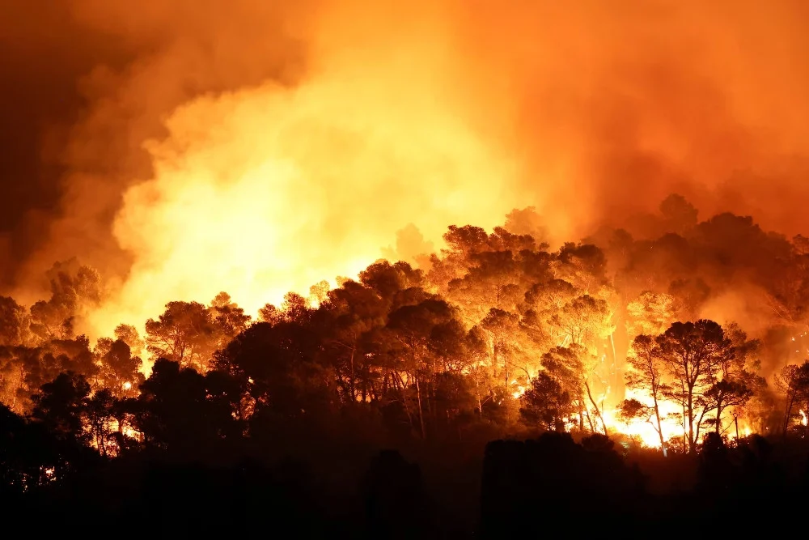

Kenali Risiko
Pahami jenis ancaman bencana dan kenali kondisi lingkungan tempat tinggalmu.
Pelajari lebih lanjut →Bencana tidak selalu bisa dicegah, tetapi dampaknya dapat dikurangi. Pelajari cara mengenali risiko, melindungi keluarga, dan mempersiapkan diri sejak sekarang.
Pahami jenis ancaman bencana dan kenali kondisi lingkungan tempat tinggalmu.
Pelajari lebih lanjut →Ketahui tindakan sebelum, saat, dan setelah bencana melalui panduan praktis.
Lihat panduan →Bangun kebiasaan siaga dengan keluarga, sekolah, komunitas, dan lingkungan sekitar.
Tentang gerakan ini →Indonesia memiliki beragam risiko bencana, mulai dari gempa bumi dan tsunami hingga banjir, tanah longsor, dan kebakaran. Setiap wilayah mempunyai karakteristik ancaman yang berbeda.
Karena itu, kesiapsiagaan perlu disesuaikan dengan risiko setempat. Mengenali jalur evakuasi, menyiapkan perlengkapan darurat, dan mengikuti informasi resmi dapat membantu mengurangi risiko terhadap keselamatan.

Pelajari karakteristik setiap ancaman agar kamu dapat mengambil keputusan yang lebih tepat ketika keadaan darurat terjadi.

Kenali guncangan, potensi bahaya susulan, dan tanda evakuasi pesisir.
Pelajari →
Pahami risiko hujan lebat, luapan air, dan pergerakan tanah.
Pelajari →
Pelajari pencegahan kebakaran rumah dan tindakan evakuasi aman.
Pelajari →Edukasi mitigasi bencana mendukung pembangunan yang lebih aman, berkelanjutan, dan tangguh menghadapi perubahan iklim.
Mendukung upaya mengurangi dampak bencana di kawasan perkotaan dan permukiman serta meningkatkan ketangguhan masyarakat.
Pelajari SDGs Indonesia ↗Mendorong peningkatan kesadaran dan kapasitas menghadapi bahaya terkait iklim, seperti banjir dan cuaca ekstrem.
Pelajari SDG 13 ↗Mulailah dengan langkah sederhana: kenali risiko, bicarakan rencana evakuasi bersama keluarga, dan siapkan kebutuhan darurat.
Buka Panduan Kesiapsiagaan →